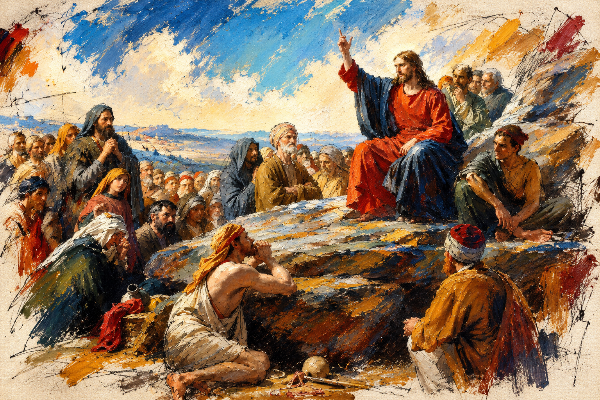

Ajaran cinta kasih yang disampaikan Yesus Kristus di atas sebuah bukit di Galilea, yang membalikkan logika kekuasaan, kemurnian, dan kelayakan — satu alur revolusi eksistensial-spiritual, dari kebebasan kehendak di padang gurun sampai keberanian menanggung akibat kebenaran, yang masih menuntut jawaban kita hari ini.
The teaching of love Jesus Christ delivered on a hillside in Galilee, overturning the logic of power, purity, and worth — one existential-spiritual revolution, from free will in the wilderness to the courage to bear truth's cost, that still demands an answer from us today.
Sesuatu berubah secara permanen ketika Sang Guru berdiri di sebuah bukit di Galilea dan menyampaikan ajaran cinta kasih yang belum pernah terdengar dengan cara seperti itu sebelumnya: bahwa yang miskin di hadapan Allah, yang berduka, yang lemah lembut, yang lapar akan keadilan — bukan yang kuat, yang kaya, atau yang berkuasa — adalah mereka yang diberkati. Ini bukan sekadar nasihat moral yang menenangkan hati. Ini adalah pesan nilai kemanusiaan yang, secara pelan namun tak terhentikan, mengubah arah peradaban manusia selama dua ribu tahun berikutnya.
Sejarawan Tom Holland, dalam Dominion: How the Christian Revolution Remade the World, mengajukan argumen yang provokatif sekaligus banyak diperdebatkan: sejumlah nilai yang hari ini dianggap "universal" dan bahkan "sekuler" — martabat setiap manusia tanpa memandang status sosial, kewajiban moral merawat yang lemah dan sakit, gagasan bahwa penguasa bisa saja salah meski memegang kekuasaan penuh — sebenarnya adalah warisan langsung dari revolusi nilai yang dimulai di atas bukit itu, bukan produk akal murni yang berdiri sendiri di luar sejarah. Tesis ini tentu tidak diterima bulat-bulat; banyak sejarawan lain menunjukkan bahwa welas asih dan kepedulian pada sesama juga tumbuh independen dalam tradisi Buddhis, Stoik, dan Konfusian jauh sebelum dan sesudahnya. Namun paling tidak, klaim Holland menegaskan satu hal yang sulit dibantah: pesan yang disampaikan di bukit itu bukan sekadar riwayat spiritual pribadi, melainkan turut membentuk arsitektur nilai yang dipakai peradaban manusia sampai hari ini.
Sejarawan zaman kuno akhir seperti Peter Brown mencatat sebuah inovasi sosial yang nyata dan terukur: komunitas-komunitas awal yang menghidupi ajaran ini adalah salah satu yang pertama secara sistematis mengorganisasi bantuan bagi janda, yatim piatu, dan orang sakit tanpa memandang kelayakan sosial mereka — praktik yang kelak menjadi cikal bakal rumah sakit dan lembaga amal modern, dan yang di dunia Yunani-Romawi kuno sebelumnya nyaris tidak memiliki preseden dalam skala tersebut. Ini bukan bukti bahwa satu tradisi memonopoli kebaikan; ia hanya menunjukkan bahwa sebuah pesan nilai, ketika dihidupi secara konsisten, mampu mengubah struktur nyata masyarakat — bukan hanya batin orang per orang.
Something changed permanently when the Teacher stood on a hillside in Galilee and delivered a teaching of love unlike anything heard that way before: that the poor in spirit, the mourning, the meek, those hungry for justice — not the strong, the wealthy, or the powerful — are the ones who are blessed. This was not merely comforting moral advice. It was a message of human value that, slowly but unstoppably, redirected the course of human civilization for the two thousand years that followed.
Historian Tom Holland, in Dominion: How the Christian Revolution Remade the World, makes a provocative and much-debated argument: several values considered "universal" and even "secular" today — the dignity of every human regardless of social status, the moral duty to care for the weak and sick, the idea that a ruler can be wrong even while holding total power — are in fact a direct inheritance of the revolution in values that began on that hillside, not a product of pure reason standing outside history. This thesis is far from unanimously accepted; many other historians point out that compassion and care for others also grew independently within Buddhist, Stoic, and Confucian traditions, both before and after. Still, Holland's claim underscores something hard to dismiss: the message delivered on that hillside was not merely a private spiritual episode, but helped shape the architecture of values human civilization still uses today.
Historians of late antiquity such as Peter Brown note a real, measurable social innovation: the earliest communities living out this teaching were among the first to systematically organize aid for widows, orphans, and the sick regardless of their social worth — a practice that would later seed modern hospitals and charitable institutions, and which had almost no precedent at that scale in the earlier Greco-Roman world. This is not proof that one tradition monopolizes goodness; it simply shows that a message of value, lived consistently, can reshape the actual structure of a society — not just the interior life of individuals.
Webbook ini tidak berpretensi memutuskan perdebatan teologis mana pun. Ia membaca Khotbah di Bukit dan Dataran (Matius 5–7, Lukas 6) sebagai teks kebijaksanaan — genre yang juga kita temukan pada Tao Te Ching, Dhammapada, atau dialog-dialog Stoik — dan meletakkannya berdampingan dengan filsafat modern untuk melihat apa yang masih bergema, sambil tetap menaruh hormat penuh pada Yesus Kristus sebagai gurunya.
This webbook makes no claim to settle any theological debate. It reads the Sermon on the Mount and the Plain (Matthew 5–7, Luke 6) as wisdom literature — the same genre we find in the Tao Te Ching, the Dhammapada, or Stoic dialogues — and sets it beside modern philosophy to see what still resonates, while holding Jesus Christ as its teacher in full respect.
Matius mencatat khotbah ini disampaikan di atas bukit (Matius 5:1); Lukas mencatat versi yang secara substansi sejalan disampaikan "di tempat yang datar" (Lukas 6:17). Para sarjana Alkitab masih berbeda pendapat apakah keduanya mencatat satu peristiwa yang sama dengan penekanan berbeda, atau dua kesempatan berbeda ketika Yesus mengajarkan isi yang serupa berulang kali kepada khalayak yang berlainan — sebuah kebiasaan lazim bagi guru pengembara di zamannya. Yang tidak diperdebatkan adalah intinya: keduanya membawa satu manifesto etika dan kesadaran batin yang sama — kasih tanpa syarat, penolakan terhadap kekerasan, dan pembongkaran kemunafikan — hanya disampaikan lewat penekanan yang berbeda.
Matius menulis dari perspektif yang lebih batin dan spiritual: transformasi dimulai dari cara seseorang mengelola niat, ego, dan orientasi rohaninya di hadapan yang transenden — karena itu ia menempatkan khotbah ini di atas gunung, tempat yang dalam tradisi Yahudi selalu melambangkan pertemuan dengan Allah. Lukas menulis dari perspektif yang lebih sosial dan konkret: transformasi itu harus diwujudkan di tengah realitas penderitaan, ketimpangan ekonomi, dan hidup sehari-hari — karena itu ia menempatkannya di dataran rendah, sejajar dengan orang banyak, dan bahkan menajamkan penekanannya ("berbahagialah kamu yang miskin," bukan "miskin di hadapan Allah," serta menambahkan seruan "celakalah kamu yang kaya" yang tidak muncul di Matius). Keduanya ibarat dua lensa kamera memotret objek yang sama persis: satu memperbesar kedalaman batin individu, satu lagi memperbesar dampak sosial dan keberpihakan pada yang rentan. Webbook ini merangkai kedua lensa itu menjadi satu, karena keduanya memang tidak pernah dimaksudkan terpisah.
Matthew records this sermon delivered on a mountainside (Matthew 5:1); Luke records a substantively parallel version delivered "on a level place" (Luke 6:17). Biblical scholars still debate whether these record the same single event with different emphasis, or two separate occasions when Jesus taught similar content repeatedly to different audiences — a common practice for an itinerant teacher of his time. What is not in dispute is the core: both carry the same single manifesto of ethics and inner awareness — unconditional love, the rejection of violence, and the dismantling of hypocrisy — only delivered with a different emphasis.
Matthew writes from a more inward, spiritual perspective: transformation begins in how a person manages intention, ego, and spiritual orientation before the transcendent — which is why he places the sermon on a mountain, a setting that in Jewish tradition always signals an encounter with God. Luke writes from a more social, concrete perspective: transformation must be enacted amid real suffering, economic inequality, and daily life — which is why he places it on level ground, level with the crowd, and even sharpens the emphasis ("blessed are you who are poor," rather than "poor in spirit," adding a "woe to you who are rich" that does not appear in Matthew at all). The two are like two camera lenses photographing the exact same object: one magnifies the depth of individual inner life, the other magnifies social impact and solidarity with the vulnerable. This webbook weaves both lenses together, because they were never meant to stand apart.
Sebelum satu kata pun dari Khotbah di Bukit diucapkan, ada empat puluh hari sunyi di padang gurun Yudea — Yesus berpuasa, sendirian, dan di titik paling rapuhnya didatangi oleh Iblis, sang penggoda, dengan tiga tawaran (Matius 4:1–11, Lukas 4:1–13). Ubah batu menjadi roti, untuk mengakhiri lapar dengan kekuatan-Nya sendiri. Jatuhkan diri dari bubungan Bait Allah, agar malaikat menopang-Nya dan semua orang percaya lewat pertunjukan mukjizat. Sujud menyembah Iblis, dan seluruh kerajaan dunia akan diberikan tanpa perlu melalui jalan salib. Tiga tawaran ini bukan godaan dosa-dosa kecil; ia adalah tiga jalan pintas menuju kekuasaan — lewat pemenuhan kebutuhan instan, lewat bukti ajaib yang memaksa iman, dan lewat penguasaan dunia tanpa kebenaran. Yesus menolak ketiganya, dan penolakan itulah — bukan mukjizat penyembuhan mana pun — yang menjadi fondasi moral bagi segala yang Ia ajarkan setelahnya.
Psikolog Jordan B. Peterson, dalam telaahnya yang meluas atas narasi ini, membaca Iblis bukan sebagai makhluk eksternal semata, melainkan sebagai arketipe suara adversarial dalam jiwa manusia sendiri — bagian dari diri yang selalu menawarkan jalan pintas rasional untuk menghindari penderitaan yang perlu. Peterson menandai bahwa ketiga godaan itu tersusun secara hierarkis, dari yang paling personal ke paling sistemik: godaan roti adalah godaan memakai kekuatan untuk kenyamanan diri sendiri; godaan bubungan Bait Allah adalah godaan menuntut kepastian instan alih-alih berjalan lewat kepercayaan yang ditempa waktu; godaan atas segala kerajaan adalah godaan tirani — menguasai dunia lewat paksaan dan tunduk pada kebohongan, bukan lewat kebenaran yang diperjuangkan dan dikorbankan untuknya. Bagi Peterson, seseorang tidak layak memegang otoritas moral apa pun sebelum lebih dulu menolak ketiga korupsi kekuasaan ini dalam dirinya sendiri — sebuah pembacaan yang menempatkan narasi ini sebagai cetak biru psikologis bagi siapa pun yang hendak memikul tanggung jawab, bukan sekadar riwayat mukjizat masa lalu.
διάβολοςdiabolos
Kata Yunani yang diterjemahkan "Iblis" dalam narasi ini, diabolos (διάβολος), secara harfiah berarti "sang pemfitnah" atau "sang penuduh" — dari kata kerja diaballein (διαβάλλειν), "melemparkan sesuatu yang memisahkan" atau "menuduh dengan maksud memecah". Dari kata inilah bahasa-bahasa Eropa mewarisi kata "devil" dan "diable". Namanya sendiri sudah menjelaskan fungsinya dalam narasi: ia bukan sekadar penggoda selera, melainkan sosok yang berusaha menuduh dan memisahkan — memisahkan Yesus dari kepercayaan-Nya pada Bapa, dan, dalam pembacaan Peterson, memisahkan setiap manusia dari tanggung jawabnya sendiri lewat argumen yang terdengar masuk akal. The Greek word translated "the Devil" in this narrative, diabolos (διάβολος), literally means "the slanderer" or "the accuser" — from the verb diaballein (διαβάλλειν), "to throw across" or "to accuse with intent to divide." English "devil" and French "diable" both descend from this word. The name itself explains its function in the story: not merely a tempter of appetite, but a figure who accuses and divides — separating Jesus from his trust in the Father, and, in Peterson's reading, separating every person from their own responsibility through arguments that sound entirely reasonable.Before a single word of the Sermon on the Mount was spoken, there were forty silent days in the Judean wilderness — Jesus fasting, alone, and at his most fragile approached by the Devil with three offers (Matthew 4:1–11, Luke 4:1–13). Turn stone into bread, ending hunger by his own power. Throw himself from the Temple's parapet, so angels would catch him and everyone would believe through spectacle. Bow down to the Devil, and every kingdom of the world would be his without ever passing through the cross. These three offers are not petty sins; they are three shortcuts to power — through instant gratification, through coercive proof that forces belief, and through ruling the world without truth. Jesus refused all three, and that refusal — not any healing miracle — becomes the moral foundation for everything he taught afterward.
Psychologist Jordan B. Peterson, in his extensive commentary on this narrative, reads the Devil not merely as an external being but as an archetype of the adversarial voice within the human psyche itself — the part of the self that always offers a rational shortcut around necessary suffering. Peterson notes that the three temptations are arranged hierarchically, from the most personal to the most systemic: the temptation of bread is the temptation to use power for one's own comfort; the temptation at the Temple's edge is the temptation to demand instant certainty instead of walking through trust forged over time; the temptation of all the kingdoms is the temptation of tyranny — ruling the world through coercion and submission to a lie, rather than through a truth fought for and sacrificed for. For Peterson, no one deserves moral authority before first refusing these three corruptions of power within themselves — a reading that treats this narrative as a psychological blueprint for anyone taking on responsibility, not merely a record of a past miracle.
"Manusia hidup bukan dari roti saja." — sebuah jawaban yang menolak menukar kebebasan dengan kepastian kebutuhan yang terjamin.
"One does not live by bread alone" — an answer that refuses to trade freedom for guaranteed security.
Delapan belas abad kemudian, Fyodor Dostoevsky menulis ulang ketiga godaan ini dalam salah satu bab paling terkenal dalam sejarah sastra dunia: Sang Inkuisitor Agung, dalam Kakak Beradik Karamazov. Dalam kisah rekaan yang diceritakan tokoh Ivan Karamazov, Kristus kembali ke bumi pada abad keenam belas di Seville, hanya untuk ditangkap oleh Inkuisitor Agung yang justru menuduhnya salah menolak ketiga godaan di padang gurun. Argumen sang Inkuisitor tajam dan mengganggu: manusia, katanya, sebenarnya tidak menginginkan kebebasan — kebebasan adalah beban yang terlalu berat untuk dipikul kebanyakan orang. Yang benar-benar diinginkan manusia hanyalah tiga hal — mukjizat, misteri, dan otoritas (chudo, taina, avtoritet). Dengan menolak mengubah batu jadi roti, Kristus memaksa manusia memilih iman secara bebas alih-alih menjamin perut mereka — padahal, kata sang Inkuisitor, kebanyakan orang akan menukar kebebasan dengan roti tanpa berpikir dua kali. Dengan menolak melompat dari bubungan Bait Allah, Ia menolak memberi bukti mukjizat yang memaksa kepercayaan — padahal manusia mendambakan kepastian yang membebaskan mereka dari keraguan. Dan dengan menolak kerajaan-kerajaan dunia, Ia menolak otoritas tunggal yang bisa mengakhiri semua konflik manusia lewat kekuasaan — sebuah otoritas yang, menurut sang Inkuisitor, justru kemudian diambil alih oleh Gereja sendiri, demi membebaskan manusia dari beban kebebasan yang tidak sanggup mereka pikul.
Dostoevsky sengaja tidak memberi Kristus argumen balasan sepatah kata pun. Setelah semalaman mendengarkan tuduhan itu dalam diam, Kristus hanya mendekat dan mencium sang Inkuisitor — sebuah jawaban lewat kasih, bukan lewat perdebatan. Namun tepat di titik ini letak kejutan yang sesungguhnya, dan yang paling sering luput dari pembacaan sekilas: sang Inkuisitor, meski telah membangun argumen semalam penuh untuk membenarkan mengapa Kristus seharusnya dihukum mati kembali, pada akhirnya justru membuka pintu selnya dan membiarkan-Nya pergi ke dalam gelapnya jalanan kota, tanpa hukuman apa pun. Kristus pergi begitu saja, dalam diam, dan tidak pernah kembali dalam cerita itu.
Keputusan sang Inkuisitor untuk melepaskan, bukan mengeksekusi, adalah teka-teki yang oleh Dostoevsky sengaja dibiarkan tanpa penjelasan — dan barangkali di situlah letak kedalamannya yang sesungguhnya. Sebagian pembaca menafsirkannya sebagai bukti bahwa ciuman itu berhasil menembus, membangkitkan kembali percikan hati nurani yang telah lama dikubur sang Inkuisitor di balik sistemnya sendiri. Yang lain membacanya justru sebaliknya: sang Inkuisitor melepaskan Kristus bukan karena tersentuh, melainkan karena yakin sepenuhnya bahwa ia telah menang — bahwa dunia toh akan tetap memilih roti, mukjizat, dan otoritas, sehingga satu orang bebas yang dilepaskan tidak lagi menjadi ancaman apa pun bagi sistem yang telah ia bangun. Ada pula yang membacanya sebagai gambaran kekuasaan yang, betapapun yakin akan pembenarannya sendiri, pada akhirnya tetap tidak sanggup menanggung kematian secara langsung di hadapan kasih yang tidak melawan. Dostoevsky tidak memihak salah satu tafsir ini; dan justru karena itulah pertanyaan tentang kebebasan kehendak dibiarkan benar-benar terbuka, dipulangkan sepenuhnya kepada setiap pembaca untuk diputuskan sendiri: benarkah manusia mendambakan kebebasan, atau diam-diam lebih memilih ditukar dengan roti, mukjizat, dan otoritas yang menjamin rasa aman — dan apa yang sebenarnya terjadi dalam diri seseorang yang telah berkuasa penuh, ketika ia memilih untuk tidak menggunakan kekuasaan itu sampai batas akhirnya?
Eighteen centuries later, Fyodor Dostoevsky rewrote these same three temptations in one of the most celebrated chapters in world literature: The Grand Inquisitor, in The Brothers Karamazov. In the fictional tale told by the character Ivan Karamazov, Christ returns to earth in sixteenth-century Seville, only to be arrested by a Grand Inquisitor who accuses him of having wrongly refused the three wilderness temptations. The Inquisitor's argument is sharp and unsettling: humanity, he claims, does not actually want freedom — freedom is too heavy a burden for most people to bear. What humanity truly wants is only three things — miracle, mystery, and authority. By refusing to turn stone into bread, Christ forced humanity to choose faith freely instead of guaranteeing their hunger would end — yet, says the Inquisitor, most people would trade freedom for bread without a second thought. By refusing to leap from the Temple, he refused to offer the miraculous proof that would force belief — yet humanity craves the certainty that frees them from doubt. And by refusing the kingdoms of the world, he refused a single authority that could end all human conflict through power — an authority which, the Inquisitor claims, the Church itself later took up, precisely to free humanity from a burden of freedom it could not carry.
Dostoevsky deliberately gives Christ no rebuttal, not a single word. After listening to the accusation in silence all night, Christ simply approaches and kisses the Inquisitor — an answer through love rather than argument. But the real surprise, the one most casual readings miss, sits exactly here: the Inquisitor, despite having spent the whole night constructing an argument for why Christ should be put to death all over again, ultimately opens the cell door and lets him go, out into the dark city streets, with no punishment at all. Christ simply leaves, in silence, and never returns within the story.
The Inquisitor's choice to release rather than execute is a puzzle Dostoevsky deliberately leaves unexplained — and perhaps that is exactly where its depth lies. Some readers interpret it as proof that the kiss broke through, reawakening a spark of conscience the Inquisitor had long buried beneath his own system. Others read it the opposite way: the Inquisitor lets Christ go not because he was moved, but because he is entirely convinced he has already won — that the world will choose bread, miracle, and authority regardless, so one free man released poses no threat to the system he has built. Still others read it as a portrait of power that, however certain of its own justification, ultimately cannot bring itself to deliver death directly into the face of a love that does not resist. Dostoevsky takes no side among these readings; and precisely because of that, the question of free will is left genuinely open, handed entirely back to each reader to decide: does humanity truly long for freedom, or does it quietly prefer to trade it for bread, miracle, and an authority that guarantees safety — and what actually happens inside someone holding total power, in the moment he chooses not to use it to its final extent?
Erich Fromm, dalam Escape from Freedom — ditulis di bayang-bayang bangkitnya fasisme Eropa — sampai pada tesis yang nyaris identik lewat jalur psikologi sosial, bukan sastra: kebebasan modern yang diraih lewat pelepasan dari otoritas tradisional justru sering melahirkan kecemasan dan keterasingan yang begitu berat, sehingga banyak orang secara sukarela menyerahkan diri pada otoritarianisme demi rasa aman. Argumen sang Inkuisitor Agung, dibaca lewat Fromm, bukan lagi fiksi abad ke-19 semata, melainkan diagnosis yang terus terbukti relevan pada abad ke-20 dan ke-21.
Erich Fromm, in Escape from Freedom — written in the shadow of rising European fascism — arrived at a nearly identical thesis through social psychology rather than literature: modern freedom, won by release from traditional authority, often produces such heavy anxiety and alienation that many people voluntarily surrender themselves to authoritarianism in exchange for safety. The Grand Inquisitor's argument, read through Fromm, is no longer merely nineteenth-century fiction, but a diagnosis that keeps proving relevant across the twentieth and twenty-first centuries.
Inilah simpul yang menautkan padang gurun dengan segala yang menyusul di khotbah-khotbah berikutnya: setiap nilai yang akan diberkati dalam Sabda Bahagia — kerendahan hati, dukacita, kelemahlembutan, kelaparan akan kebenaran — hanya bermakna karena lebih dulu dipilih secara bebas, bukan dipaksakan lewat roti, mukjizat, atau otoritas. Revolusi yang dimulai di padang gurun bukan revolusi kekuasaan, melainkan revolusi kehendak: penegasan bahwa martabat manusia justru lahir dari beratnya memilih kebenaran secara sukarela, bukan dari kemudahan menerima jaminan apa pun secara cuma-cuma.
This is the knot that ties the wilderness to everything that follows in the sermons ahead: every value about to be blessed in the Beatitudes — humility, mourning, meekness, hunger for righteousness — only carries meaning because it is first freely chosen, not forced through bread, miracle, or authority. The revolution that begins in the wilderness is not a revolution of power but a revolution of will: an assertion that human dignity is born precisely from the weight of choosing truth voluntarily, not from the ease of accepting any guarantee for free.

Yunani: Novum Testamentum Graece (Nestle-Aland/teks kritis standar) · Indonesia: Alkitab Terjemahan Baru, Lembaga Alkitab Indonesia (LAI) Greek: Novum Testamentum Graece (Nestle-Aland critical text) · Indonesian: Alkitab Terjemahan Baru, Indonesian Bible Society (LAI)
Bayangkan berdiri di tengah kerumunan di bukit Galilea itu, dan mendengar Sang Guru membuka khotbahnya bukan dengan memuji yang kuat, yang benar secara ritual, atau yang berhasil — melainkan memberkati yang miskin di hadapan Tuhan, yang berduka, yang lembut hati, yang lapar akan keadilan. Ini bukan sekadar penghiburan sentimental untuk kaum tertindas. Ini adalah konsep revolusioner: dekonstruksi total atas hierarki nilai yang dipegang hampir semua masyarakat kuno — dan, jika kita jujur, sebagian besar masyarakat hari ini: kekuatan mengalahkan kelemahan, kemenangan mengalahkan kekalahan, kepastian mengalahkan keraguan.
Filsuf Prancis René Girard membaca pembalikan ini melalui teorinya tentang hasrat mimetik dan mekanisme kambing hitam: masyarakat manusia, menurut Girard, secara historis menstabilkan diri dengan menyalahkan dan mengorbankan satu pihak yang lemah demi meredakan kekerasan kolektif. Yang membuat narasi Injil unik, argumen Girard, adalah bahwa ia menceritakan kisah kambing hitam dari sudut pandang korban yang tidak bersalah — membongkar mekanisme itu alih-alih menyembunyikannya. Delapan Sabda ini adalah versi etisnya: pernyataan terbuka bahwa mereka yang biasanya dikorbankan, dipinggirkan, atau dianggap gagal, justru berdiri di pusat perhatian moral.
Friedrich Nietzsche melihat gerakan yang sama ini dan menyimpulkan hal yang berlawanan: baginya, pemuliaan atas kelemahan dan kerendahan hati adalah moralitas budak, lahir dari ressentiment yang menyamar sebagai kebajikan — kritik yang akan terus kita bawa sepanjang bab ini, bukan untuk ditutup terburu-buru, melainkan untuk diuji pada tiap sabda satu demi satu.
Satu catatan bahasa penting sebelum masuk ke tiap sabda: kata pembuka yang diulang delapan kali, Μακάριοι (Makarioi, jamak dari makarios), sering diterjemahkan "berbahagialah" — namun ini bukan kebahagiaan dangkal seperti perasaan senang karena mendapat hadiah. Makarios menandai sebuah status: diberkati, diselaraskan dengan sukacita ilahi, kepuasan batin dari Allah yang tidak bergantung sama sekali pada keadaan duniawi. Delapan sabda ini bukan resep untuk merasa senang; mereka mendeklarasikan siapa yang sesungguhnya berada dalam posisi diberkati di hadapan Allah — klaim yang jauh lebih radikal daripada sekadar nasihat menuju kebahagiaan.
Picture standing in that crowd on the Galilean hillside, hearing the Teacher open not by praising the strong, the ritually correct, or the successful — but by blessing the poor in spirit, the grieving, the meek, those hungry for justice. This is not sentimental comfort for the oppressed. It is a revolutionary concept: a total deconstruction of the value hierarchy held by nearly every ancient society — and, if we are honest, most societies today: strength over weakness, victory over defeat, certainty over doubt.
French philosopher René Girard read this reversal through his theory of mimetic desire and the scapegoat mechanism: human societies, Girard argued, have historically stabilized themselves by blaming and sacrificing a weaker party to defuse collective violence. What makes the Gospel narrative unique, in Girard's account, is that it tells the scapegoat story from the point of view of the innocent victim — exposing the mechanism rather than hiding it. These eight sayings are its ethical counterpart: an open declaration that those usually sacrificed, marginalized, or judged failures now stand at the center of moral attention.
Friedrich Nietzsche saw the same movement and drew the opposite conclusion: for him, glorifying weakness and lowliness was slave morality, born of ressentiment disguised as virtue — a critique we will carry through this chapter, not to close it hastily, but to test it against each saying in turn.
One linguistic note before turning to each saying: the opening word repeated eight times, Μακάριοι (Makarioi, plural of makarios), is usually translated "blessed" — but this is not shallow happiness, the kind felt upon receiving a gift. Makarios marks a status: being blessed, aligned with divine joy, an inner satisfaction from God that depends not at all on worldly circumstance. These eight sayings are not a recipe for feeling good; they declare who actually stands in a blessed position before God — a far more radical claim than mere advice toward happiness.
Dua bahasa akan dipakai berdampingan sepanjang bab ini, dan keduanya diperlukan, bukan salah satunya cukup sendirian. Bahasa pertama adalah bahasa iman: makna asli tiap sabda di hadapan Allah, akar katanya dalam bahasa Yunani, dan bobot teologisnya sebagai janji Kerajaan Sorga — dimensi ini tidak dikurangi atau dilunakkan demi kenyamanan pembaca sekular. Bahasa kedua adalah bahasa filsafat dan psikologi: bagaimana struktur etis yang sama, dilepaskan sejenak dari kerangka teologisnya, ternyata bergema dalam eudaimonia Sokrates, keberanian eksistensial, riset psikologi kontemporer, hingga etika sosial modern. Ini bukan usaha mereduksi satu ke yang lain — bukan mengklaim iman "sebenarnya hanya" filsafat, atau filsafat "sekadar" gema iman. Keduanya dibiarkan berdiri penuh dengan bobotnya masing-masing, dibaca berdampingan sebagai dua peta jalan menuju keutuhan yang sama, karena kebenaran tentang jiwa manusia yang sungguh dalam biasanya cukup kuat untuk muncul lewat lebih dari satu bahasa.
Two languages will run side by side throughout this chapter, and both are needed — neither is sufficient alone. The first is the language of faith: each saying's original meaning before God, its root in Greek, and its theological weight as a promise of the Kingdom of Heaven — this dimension is not diminished or softened for the comfort of a secular reader. The second is the language of philosophy and psychology: how the same ethical structure, briefly set apart from its theological frame, turns out to echo in Socratic eudaimonia, existential courage, contemporary psychological research, and modern social ethics. This is not an attempt to reduce one to the other — not a claim that faith is "really just" philosophy, or that philosophy is "merely" an echo of faith. Both are left standing at full weight, read side by side as two roadmaps toward the same wholeness, because a truth about the human soul deep enough is usually strong enough to surface through more than one language.
Bahasa Yunani punya dua kata berbeda untuk "miskin": penia (πενία, miskin namun masih bisa bekerja untuk bertahan hidup) dan ptōchos (πτωχός, miskin ekstrem — bangkrut total, mengemis, sepenuhnya bergantung pada belas kasihan orang lain). Sabda pertama secara sengaja memilih kata yang kedua, yang lebih keras: hoi ptōchoi tō pneumati (οἱ πτωχοὶ τῷ πνεύματι), "yang bangkrut total di hadapan Allah". Ini bukan sekadar kerendahan hati yang sopan, melainkan pengakuan penuh bahwa seseorang tidak memiliki kebaikan, kebenaran, atau kehebatan apa pun untuk dibanggakan sebagai bekal menyelamatkan dirinya sendiri — sebuah kebangkrutan rohani total, sejalan dengan pengakuan Sokrates bahwa kebijaksanaan sejati dimulai dari mengetahui bahwa kita tidak tahu. Nilai filosofis aktualnya sangat konkret: riset psikologi tentang efek Dunning–Kruger menunjukkan justru mereka yang paling minim kompetensi cenderung paling percaya diri, sementara "kerendahan hati intelektual" (intellectual humility) — kini diteliti serius oleh psikolog seperti Mark Leary — terbukti berkorelasi dengan keterbukaan berpikir dan kualitas keputusan yang lebih baik. Di era kepastian yang diperjualbelikan lewat media sosial dan polarisasi opini, sabda ini adalah penolakan radikal terhadap godaan untuk selalu merasa paling benar. Fromm menambahkan lapisan penting: ini bukan panggilan untuk pasif, melainkan pelepasan dari kebutuhan memiliki, mengontrol, dan membuktikan diri (Being Mode, bukan Having Mode) — jawaban langsung atas kekhawatiran Nietzsche bahwa ini hanya kelemahan yang disamarkan.
Greek has two distinct words for "poor": penia (πενία, poor but still able to work for survival) and ptōchos (πτωχός, extreme poverty — utterly bankrupt, reduced to begging, wholly dependent on the mercy of others). The first saying deliberately chooses the harsher term: hoi ptōchoi tō pneumati (οἱ πτωχοὶ τῷ πνεύματι), "those utterly bankrupt before God." This is not polite modesty but a total admission that one has no goodness, righteousness, or greatness of one's own to offer as collateral for saving oneself — a complete spiritual bankruptcy, aligned with Socrates's admission that true wisdom begins with knowing that we do not know. Its actual philosophical value is concrete: research on the Dunning–Kruger effect shows that those with the least competence tend to be most confident, while "intellectual humility" — now studied seriously by psychologists like Mark Leary — correlates with open-mindedness and better decision quality. In an age where certainty is sold through social media and polarized opinion, this saying is a radical refusal of the temptation to always feel right. Fromm adds an important layer: this is not a call to passivity, but a release from the need to possess, control, and prove oneself (Being Mode, not Having Mode) — a direct answer to Nietzsche's worry that this is merely weakness in disguise.
Kata Yunani yang dipakai, penthountes (πενθοῦντες, dari pentheō), bukan istilah untuk kesedihan ringan — ini adalah kata yang lazim dipakai untuk ratapan atas kematian seseorang yang sangat dicintai, duka paling dalam yang dikenal manusia. Yang diratapi bukan sekadar nasib buruk, melainkan dosa itu sendiri — baik dosa pribadi maupun dosa yang merusak dunia. Berduka di sini bukan kepasifan, melainkan penolakan terhadap penyangkalan (denial) — keberanian merasakan penuh kehilangan itu, alih-alih menumpulkannya lewat kesibukan atau hiburan tanpa henti. Janji balasannya pun dipilih dengan cermat: mereka yang meratap akan parakaleō (παρακαλέω) — dihibur, dipanggil untuk didampingi — kata yang sama yang kelak dipakai untuk menyebut Roh Kudus sebagai "Penghibur/Parakletos". Elisabeth Kübler-Ross, lewat penelitiannya tentang tahapan duka, menegaskan bahwa dukacita yang diproses secara jujur adalah jalan menuju penerimaan, sementara duka yang ditekan justru menetap dan mendistorsi jiwa dalam bentuk lain. Nilai filosofis aktualnya menghantam langsung budaya "positivitas beracun" (toxic positivity) di zaman kita, yang menuntut orang selalu tampak baik-baik saja — sabda ini justru memberkati keberanian menampakkan kerapuhan.
The Greek word used, penthountes (πενθοῦντες, from pentheō), is no term for mild sadness — it is the word ordinarily used for mourning the death of someone deeply loved, the deepest grief known to humans. What is mourned here is not merely bad luck, but sin itself — both personal sin and the sin that wounds the world. Mourning here is not passivity but a refusal of denial — the courage to feel that loss fully, instead of numbing it through busyness or endless distraction. Even the promised reward is chosen precisely: those who mourn will be parakaleō (παρακαλέω) — comforted, called alongside — the same word later used for the Holy Spirit as "Comforter/Paraclete." Elisabeth Kübler-Ross's work on the stages of grief affirms that honestly processed grief is the road to acceptance, while suppressed grief lingers and distorts the soul in other forms. Its actual philosophical value cuts directly against today's "toxic positivity" culture, which demands people always appear fine — this saying instead blesses the courage to show fragility.
Kata Yunani yang diterjemahkan "lemah lembut", praeis (πραεῖς, dari praus), sering disalahpahami sebagai "penakut" atau "lemah". Dalam Yunani kuno, praus justru dipakai untuk menggambarkan seekor kuda liar yang telah dijinakkan sepenuhnya: kekuatannya yang besar tidak dihilangkan, hanya dialihkan sepenuhnya ke bawah kendali penunggangnya — bukan kuda tak berdaya, melainkan kekuatan besar yang memilih tunduk. Girard akan membacanya sebagai penolakan ikut serta dalam rivalitas mimetik: menolak eskalasi kekerasan balas-membalas yang menjerat hampir semua konflik manusia. Nilai filosofis aktualnya terlihat jelas dalam studi kepemimpinan kontemporer, yang membedakan "kekuasaan atas" (power over) dari "kekuasaan bersama" (power with) — kelemahlembutan, dalam pengertian ini, adalah kepemimpinan yang tidak butuh mendominasi untuk dianggap kuat.
The Greek word translated "meek," praeis (πραεῖς, from praus), is often misunderstood as "timid" or "weak." In ancient Greek, praus was in fact used to describe a wild horse that had been fully tamed: its great strength is not removed, only fully redirected under its rider's control — not a helpless animal, but immense strength that has chosen submission. Girard would read this as a refusal to enter mimetic rivalry: declining the escalating cycle of retaliatory violence that traps nearly every human conflict. Its actual philosophical value shows up clearly in contemporary leadership studies, which distinguish "power over" from "power with" — meekness, in this sense, is leadership that needs no domination to be recognized as strong.
Dikaiosynē (δικαιοσύνη), kata Yunani yang diterjemahkan "kebenaran" di sini, mencakup lebih dari sekadar benar secara moral — ia berarti keadilan dan keselarasan hidup penuh dengan kehendak serta karakter Allah. Tata bahasa yang dipakai juga bukan kebetulan: kata kerja peinōntes dan dipsōntes (πεινῶντες καὶ διψῶντες) berbentuk partisip aktif, menandai hasrat yang terus-menerus dan mendesak — bukan lapar sesaat yang bisa diabaikan, melainkan kerinduan konstan, seperti orang tersesat di padang pasir yang benar-benar membutuhkan air untuk bertahan hidup. Sabda ini menolak kepuasan diri (complacency) moral — menuntut agar keadilan bukan sekadar cita-cita abstrak, melainkan kebutuhan semendesak lapar dan haus jasmani, dengan janji bahwa mereka akan chortasthēsontai (χορτασθήσονται) — dikenyangkan sampai benar-benar puas. Filsuf moral menyebut kapasitas mengejar keadilan tanpa henti ini "keberanian moral" (moral courage): kesediaan bertindak benar meski berisiko kerugian pribadi, sebagaimana diteliti Rushworth Kidder. Nilai filosofis aktualnya tampak jelas pada mereka yang mempertaruhkan karier dan keamanan demi mengungkap kebenaran — dari pelapor pelanggaran (whistleblower) hingga aktivis hak sipil — sekaligus menjadi kritik terhadap "lisensi moral" (moral licensing), kecenderungan merasa cukup berbuat baik setelah satu tindakan kecil, lalu berhenti menuntut lebih dari diri sendiri.
Dikaiosynē (δικαιοσύνη), the Greek word translated "righteousness" here, covers more than mere moral correctness — it means justice and a life fully aligned with the will and character of God. The grammar is also no accident: the verbs peinōntes and dipsōntes (πεινῶντες καὶ διψῶντες) are active participles, marking a continuous, urgent craving — not a passing hunger easily ignored, but a constant longing, like someone lost in the desert who genuinely needs water to survive. This saying rejects moral complacency — insisting that justice is not an abstract ideal but a need as urgent as physical hunger and thirst, with the promise that they will be chortasthēsontai (χορτασθήσονται) — filled to complete satisfaction. Moral philosophers call this relentless pursuit of justice "moral courage": the willingness to act rightly despite personal risk, as studied by Rushworth Kidder. Its actual philosophical value is visible in those who risk career and safety to expose the truth — from whistleblowers to civil-rights activists — and it doubles as a critique of "moral licensing," the tendency to feel one good deed earns a pass from demanding more of oneself.
Kata Yunani eleēmones (ἐλεήμονες, dari eleēmōn) berakar pada konsep Ibrani chesed — bukan sekadar rasa kasihan yang pasif di dalam hati, melainkan kasih setia yang bertindak nyata. Belas kasihan di sini adalah kemampuan masuk ke dalam penderitaan orang lain dan benar-benar melakukan sesuatu untuk meringankannya — keputusan aktif memutus siklus balas dendam yang menjadi mesin kekerasan sepanjang sejarah manusia, sejalan dengan mekanisme kambing hitam yang dibongkar Girard. Mereka yang eleēmōn bertindak demikian karena sadar telah lebih dulu menerima kemurahan yang sama dari Allah. Riset primatolog Frans de Waal tentang empati pada kera besar menunjukkan bahwa kapasitas berbelas kasih memiliki akar biologis yang dalam, bukan sekadar konstruksi budaya. Nilai filosofis aktualnya hidup dalam gerakan keadilan restoratif (restorative justice), yang mengutamakan pemulihan hubungan pelaku-korban ketimbang sekadar hukuman balas dendam yang menjadi default banyak sistem peradilan modern.
The Greek word eleēmones (ἐλεήμονες, from eleēmōn) is rooted in the Hebrew concept of chesed — not passive pity felt in the heart, but loving-kindness that acts. Mercy here is the ability to enter another's suffering and actually do something to relieve it — an active decision to break the cycle of retaliation that has fueled violence throughout human history, aligned with the scapegoat mechanism Girard exposed. Those who are eleēmōn act this way because they know they first received the same mercy from God. Primatologist Frans de Waal's research on empathy in great apes shows this capacity has deep biological roots, not merely cultural construction. Its actual philosophical value lives on in the restorative justice movement, which prioritizes repairing the relationship between offender and victim over the retributive punishment that remains the default in so many modern justice systems.
Kata Yunani katharoi (καθαροὶ, dari katharos) berarti murni, bersih dari campuran — istilah yang sama dipakai untuk logam yang telah dimurnikan dari terak, atau air tanpa kotoran sedikit pun. Kesucian hati di sini bukan soal ritual luar, seperti tradisi keagamaan pada zaman itu, melainkan singleness of heart — hati yang tulus dan tidak terbagi, keselarasan penuh antara persona yang ditampilkan ke dunia dan siapa diri kita sebenarnya di balik pintu tertutup, tanpa kepalsuan, hipokrisi, atau niat tersembunyi. Ini penyatuan yang oleh psikolog humanistik Carl Rogers disebut kongruensi, yang dalam penelitiannya terbukti menjadi salah satu prasyarat kesehatan mental yang mendalam. Nilai filosofis aktualnya terasa tajam di zaman identitas yang dikurasi habis-habisan di media sosial — sabda ini adalah tantangan langsung terhadap kehidupan performatif, mengingatkan bahwa jarak antara wajah publik dan batin yang sesungguhnya adalah sumber keretakan psikologis yang diam-diam menggerogoti.
The Greek word katharoi (καθαροὶ, from katharos) means pure, unmixed — the same term used for metal refined of its dross, or water without a trace of contamination. Purity of heart here is not about outward ritual, as in the religious tradition of the time, but singleness of heart — a heart sincere and undivided, full alignment between the persona shown to the world and who we actually are behind closed doors, without falseness, hypocrisy, or hidden motive. This is the unity humanistic psychologist Carl Rogers called congruence, which his research found to be a precondition for deep mental health. Its actual philosophical value feels sharp in an age of heavily curated social-media identity — this saying directly challenges performative living, a reminder that the gap between public face and inner self is a quietly corrosive source of psychological fracture.
Kata Yunani eirēnopoioi (εἰρηνοποιοί) adalah gabungan dua kata: eirēnē (εἰρήνη, damai/syalom) dan poieō (ποιέω, membuat atau menciptakan). Teks ini secara sengaja tidak mengatakan "pencinta damai" (peace-lovers, yang bisa saja pasif), melainkan "pembuat damai" — orang yang secara aktif menciptakan damai lewat kerja nyata mendamaikan manusia dengan Allah dan mendamaikan sesama yang berselisih. Membawa damai adalah kata kerja, bukan sifat pasif — menuntut keterlibatan aktif merajut rekonsiliasi, bukan sekadar menghindari konflik. Martin Luther King Jr., dalam Surat dari Penjara Birmingham, membedakan "damai negatif" — ketiadaan sementara ketegangan yang mempertahankan status quo tak adil — dari "damai positif": hadirnya keadilan sesungguhnya, sebuah pembedaan yang ia gali langsung dari tradisi etis yang sama ini. Nilai filosofis aktualnya penting dalam setiap perdebatan rekonsiliasi pascakonflik: kedamaian sejati menuntut keberanian menghadapi ketidakadilan yang mendasarinya, bukan sekadar membungkamnya.
The Greek word eirēnopoioi (εἰρηνοποιοί) is a compound of two words: eirēnē (εἰρήνη, peace/shalom) and poieō (ποιέω, to make or create). The text deliberately does not say "peace-lovers" (who could remain passive), but "peace-makers" — those who actively create peace through the real work of reconciling people to God and reconciling those at odds with one another. Peacemaking is a verb, not a passive trait — it demands active work weaving reconciliation, not merely avoiding conflict. Martin Luther King Jr., in his Letter from Birmingham Jail, distinguished "negative peace" — the temporary absence of tension that preserves an unjust status quo — from "positive peace": the presence of genuine justice, a distinction he drew directly from this same ethical tradition. Its actual philosophical value matters in every post-conflict reconciliation debate: real peace demands the courage to confront underlying injustice, not simply silence it.
Kata kerja diōkō (διώκω) berarti mengejar sesuatu secara agresif — dan bentuk tata bahasa yang dipakai di sini, dediōgmenoi (δεδιωγμένοι), adalah bentuk pasif sempurna (perfect passive): secara harfiah "mereka yang telah dan terus-menerus dikejar/dianiaya," bukan peristiwa sesaat yang lewat begitu saja, melainkan kondisi berkelanjutan. Sabda penutup ini pengakuan jujur bahwa memegang teguh kebenaran akan berbiaya sosial yang terus-menerus — pengucilan, kehilangan status, bahkan bahaya nyata — dan penganiayaan itu datang bukan karena kesalahan moral atau kecerobohan pribadi, melainkan justru karena mempertahankan kebenaran Allah di tengah dunia yang membencinya. Václav Havel, dramawan yang kelak menjadi presiden Cekoslowakia setelah dipenjara rezim totaliter, menyebut sikap ini "hidup dalam kebenaran" (living in truth): penolakan berpartisipasi dalam kebohongan kolektif meski harganya mahal. Nilai filosofis aktualnya diperkuat riset psikologi sosial tentang pengucilan (ostracism), seperti karya Kipling Williams, yang menunjukkan betapa berat secara neurologis biaya penolakan sosial bagi manusia — menjadikan sabda ini bukan janji kosong, melainkan pengakuan realistis atas beratnya harga yang ditanggung siapa pun yang menolak tunduk pada kebohongan yang nyaman.
The verb diōkō (διώκω) means to pursue aggressively — and the grammatical form used here, dediōgmenoi (δεδιωγμένοι), is the perfect passive: literally "those who have been and continue to be pursued/persecuted," not a single passing event but an ongoing condition. This closing saying is an honest admission that holding fast to truth carries an ongoing social cost — exclusion, loss of status, even real danger — and that persecution comes not from moral failure or personal carelessness, but precisely from upholding God's truth in a world that hates it. Václav Havel, the playwright who later became president of Czechoslovakia after imprisonment under a totalitarian regime, called this stance "living in truth": refusing to participate in collective lies no matter the price. Its actual philosophical value is reinforced by social psychology research on ostracism, such as Kipling Williams's work, showing how neurologically heavy the cost of social rejection is for humans — making this saying not an empty promise but a realistic acknowledgment of the price anyone pays for refusing a comfortable lie.
Rangkuman struktur teks: dibaca berurutan, kedelapan sabda ini bukan daftar acak, melainkan satu lingkaran spiritual yang membangun satu sama lain. Ia diawali dari kesadaran akan kebangkrutan rohani (ptōchos), mendorong pertobatan lewat dukacita (pentheō), menghasilkan kelembutan dan kerendahan hati (praus), membangkitkan keharusan mengejar kebenaran Allah (dikaiosynē), lalu diwujudkan dalam tindakan nyata — kemurahan hati (eleēmōn), kemurnian hati (katharos), dan penciptaan damai (eirēnopoios) — yang pada akhirnya, karena dijalani secara konsisten di dunia yang membenci kebenaran, memicu penolakan dan penganiayaan (diōkō). Lingkaran ini tidak berhenti di titik terakhir; ia kembali menuntut kerendahan hati yang sama yang membukanya.
Structural summary: read in sequence, these eight sayings are not a random list but a single spiritual circle that builds on itself. It begins with awareness of spiritual bankruptcy (ptōchos), drives repentance through mourning (pentheō), produces gentleness and humility (praus), awakens an urgent hunger for God's righteousness (dikaiosynē), and is then embodied in concrete action — mercy (eleēmōn), purity of heart (katharos), and the active making of peace (eirēnopoios) — which, lived consistently in a world that hates the truth, ultimately provokes rejection and persecution (diōkō). The circle does not end there; it loops back, demanding the same humility that opened it.
Dibaca satu demi satu seperti ini, Carl Jung akan menyebut kedelapan sabda bukan sebagai daftar kebajikan terpisah, melainkan satu peta bertahap dari kehancuran ego menuju keutuhan jiwa — dari kesadaran akan kekosongan diri, melalui dukacita dan kelaparan akan makna, sampai pada kapasitas mendamaikan dan menanggung akibat karena berpegang pada kebenaran. Seseorang yang telah berdamai dengan kegelapannya sendiri (Bayangan, dalam istilah Jung) tidak lagi butuh mengorbankan orang lain untuk merasa benar.
Read one by one like this, Carl Jung would call the eight sayings not a list of separate virtues but a single, staged map from the collapse of ego toward wholeness of soul — from awareness of one's own emptiness, through grief and hunger for meaning, to the capacity to reconcile and bear the cost of holding to truth. Someone who has made peace with their own darkness (the Shadow, in Jung's term) no longer needs to sacrifice others to feel righteous.
Kritik Nietzsche tidak pernah benar-benar terbantahkan, dan tidak seharusnya buru-buru dijawab. Ada perbedaan nyata antara martabat yang ditemukan dalam penderitaan yang dipilih secara sadar, dan romantisasi penderitaan yang justru melanggengkan ketidakadilan. Pembaca yang jujur akan membawa pertanyaan ini terus, bukan menutupnya.
Nietzsche's critique has never truly been refuted, and should not be answered too quickly. There is a real difference between dignity found in suffering consciously chosen, and a romanticizing of suffering that ends up perpetuating injustice. The honest reader carries this question forward rather than closing it.
Serangkaian antitesis dalam Khotbah di Bukit — "kamu telah mendengar... tetapi aku berkata kepadamu" — adalah salah satu gerakan filosofis paling berani dalam literatur kuno. Guru ini tidak membatalkan hukum; Ia memindahkan medan pertempurannya. Larangan membunuh diperluas menjadi larangan menyimpan kebencian di hati; larangan berzina diperluas menjadi larangan memandang dengan hasrat menguasai. Yang diadili bukan lagi tindakan yang tampak, melainkan niat yang tersembunyi.
Immanuel Kant, delapan belas abad kemudian, akan merumuskan sesuatu yang secara struktural mirip dalam imperatif kategoris-nya: tindakan bermoral bukan karena konsekuensinya menguntungkan, atau karena hukum eksternal memaksanya, melainkan karena kehendak itu sendiri selaras dengan hukum universal yang kita tetapkan bagi diri sendiri. Ini adalah pergeseran dari heteronomi — kepatuhan pada otoritas di luar diri karena takut hukuman atau mengejar pahala — menuju otonomi, di mana nurani menjadi hakim tertinggi. Bedanya, dan ini penting: Kant sampai pada otonomi lewat rasio murni yang dingin, sedangkan pergeseran dalam Khotbah di Bukit sampai ke sana lewat kasih yang menuntut lebih dari sekadar rasio.
The series of antitheses in the Sermon on the Mount — "you have heard it said... but I tell you" — is one of the boldest philosophical moves in ancient literature. The Teacher does not abolish the law; He relocates its battlefield. The prohibition against murder expands into a prohibition against harboring hatred; the prohibition against adultery expands into a prohibition against looking with a will to possess. What is judged is no longer the visible act but the hidden intention.
Immanuel Kant, eighteen centuries later, would formulate something structurally similar in his categorical imperative: an action is moral not because its consequences are advantageous, nor because an external law forces it, but because the will itself aligns with a universal law we set for ourselves. This is a shift from heteronomy — obeying an outside authority out of fear of punishment or pursuit of reward — toward autonomy, where conscience becomes the highest judge. The difference matters: Kant arrives at autonomy through cold pure reason, while the shift in the Sermon on the Mount arrives there through a love that demands more than reason alone.
Psikoanalisis menambahkan lapisan penting di sini. Superego, dalam kerangka Freudian, adalah suara internal hasil internalisasi otoritas eksternal — orang tua, masyarakat, agama yang diajarkan secara dogmatis — dan sering kali beroperasi lewat rasa bersalah dan hukuman diri, bukan kebebasan. Nurani sejati, sebagaimana dibedakan oleh banyak psikolog eksistensial termasuk Rollo May, justru lahir dari keberanian menghadapi kebebasan dan tanggung jawab itu sendiri, bukan dari ketakutan akan hukuman batin. Pergeseran dari hukum eksternal ke motif internal, jika salah dibaca, bisa berubah menjadi mesin rasa bersalah yang lebih kejam daripada hukum lama — sebuah risiko yang layak diakui secara jujur, bukan ditutup-tutupi.
Psychoanalysis adds an important layer here. The superego, in the Freudian framework, is the internal voice formed by internalizing external authority — parents, society, dogmatically taught religion — and often operates through guilt and self-punishment rather than freedom. True conscience, as distinguished by many existential psychologists including Rollo May, is born instead from the courage to face freedom and responsibility themselves, not from fear of internal punishment. The shift from external law to internal motive, if misread, can become a guilt machine crueler than the old law — a risk worth naming honestly rather than glossing over.
"Kamu telah mendengar firman: Kasihilah sesamamu manusia dan bencilah musuhmu. Tetapi Aku berkata kepadamu: Kasihilah musuhmu dan berdoalah bagi mereka yang menganiaya kamu... Karena jikalau kamu mengasihi orang yang mengasihi kamu, apakah upahmu? Bukankah pemungut cukai juga berbuat demikian?"
"You have heard that it was said, 'Love your neighbor and hate your enemy.' But I tell you: love your enemies and pray for those who persecute you... If you love those who love you, what reward will you get? Are not even the tax collectors doing that?"
Sulit melebih-lebihkan betapa brutalnya tuntutan ini bagi audiens aslinya. Ini bukan diucapkan kepada bangsa yang aman dan berdaulat, melainkan kepada rakyat Yahudi yang hidup di bawah pendudukan militer Romawi — dengan pajak yang mencekik, prajurit bersenjata di jalan-jalan mereka sendiri, dan ingatan kolektif tentang pemberontakan yang ditumpas secara berdarah. "Musuh" di sini bukan abstraksi filosofis; ia punya wajah, seragam, dan tombak. Menyuruh orang-orang semacam ini untuk secara aktif mengasihi — bukan sekadar menoleransi — penindas mereka sendiri adalah salah satu tuntutan etis paling ekstrem yang pernah dicatat dalam sejarah pemikiran manusia. Kata kerja yang dipakai, agapate (ἀγαπᾶτε, dari akar agapē), bukan kebetulan: bahasa Yunani punya setidaknya tiga kata berbeda untuk "cinta" — erōs untuk hasrat romantis, philia untuk kasih sayang persahabatan, dan agapē untuk cinta sebagai keputusan kehendak, bukan perasaan spontan. Perintah ini secara sengaja tidak menuntut kita merasa hangat pada musuh — sesuatu yang mustahil dipaksakan — melainkan menuntut kita memilih bertindak demi kebaikan mereka, sebuah tuntutan kehendak yang jauh lebih berat justru karena tidak bergantung pada emosi yang bisa reda atau menguat begitu saja.
Di sinilah letak jawaban paling telak terhadap kritik Nietzsche yang sudah kita bawa sejak Bab Tiga. Nietzsche menuduh moralitas semacam ini sebagai moralitas budak — pelarian orang lemah yang tidak sanggup membalas. Namun membalas kekerasan dengan kekerasan justru jalan yang jauh lebih mudah, lebih naluriah, dan lebih "kuat" secara naif: itulah yang dilakukan hampir setiap manusia dan hampir setiap peradaban sepanjang sejarah tanpa perlu usaha sadar apa pun. Yang benar-benar sulit, yang menuntut kekuatan kehendak jauh melampaui rata-rata, adalah menahan naluri balas dendam yang begitu wajar dan memilih kebaikan bagi orang yang justru berhak kau benci. René Girard akan menyebut ini sebagai satu-satunya jalan keluar sungguhan dari mesin kekerasan mimetik yang telah menjerat peradaban manusia sejak awal: bukan menekan hasrat membalas lewat represi, melainkan menggantinya secara sadar dengan hasrat yang berlawanan arah sepenuhnya.
It is hard to overstate how brutal this demand was for its original audience. This was not spoken to a safe, sovereign nation, but to a Jewish population living under Roman military occupation — under crushing taxation, armed soldiers in their own streets, and the collective memory of revolts drowned in blood. "Enemy" here was no philosophical abstraction; it had a face, a uniform, a spear. Telling people in that position to actively love — not merely tolerate — their own oppressors is one of the most extreme ethical demands ever recorded in the history of human thought. The verb used, agapate (ἀγαπᾶτε, from the root agapē), is no accident: Greek has at least three distinct words for "love" — erōs for romantic desire, philia for the affection of friendship, and agapē for love as an act of will rather than a spontaneous feeling. This command deliberately does not demand that we feel warmth toward an enemy — something impossible to force — but that we choose to act for their good, a demand of will that is harder precisely because it does not depend on emotion that can rise or fade on its own.
Here lies the sharpest possible answer to Nietzsche's critique, carried since Chapter Three. Nietzsche accused this kind of morality of being slave morality — the escape route of the weak, unable to strike back. But striking back is, in fact, the far easier, more instinctive, and more naively "strong" path: it is what nearly every human and nearly every civilization has done throughout history without any conscious effort at all. What is genuinely difficult, what demands a strength of will far above average, is restraining a perfectly natural urge for revenge and choosing good for someone who has, by any ordinary reckoning, earned your hatred. René Girard would call this the only real way out of the machine of mimetic violence that has trapped human civilization from the start: not suppressing the desire to retaliate through repression, but consciously replacing it with a desire pointed in the exact opposite direction.
τὴν δεξιὰν σιαγόναtēn dexian siagona
"...siapa yang menampar pipi kananmu..." — detail sepele ini ternyata sangat spesifik secara sosial. Sarjana Alkitab Walter Wink menunjukkan bahwa dalam budaya Timur Tengah kuno yang mayoritas menggunakan tangan kanan, satu-satunya cara memukul pipi kanan seseorang secara wajar adalah dengan punggung tangan — sebuah tamparan khas yang di masa itu bukan sekadar kekerasan fisik, melainkan penghinaan hierarkis yang sengaja dilakukan tuan kepada budak, penjajah kepada yang dijajah, atasan kepada bawahan, bukan pukulan antar setara. Dengan sengaja menyodorkan pipi kiri setelahnya, korban memaksa si penyerang untuk salah satu dari dua pilihan yang sama-sama tidak nyaman baginya: memukul dengan telapak tangan terbuka seperti kepada sesama yang setara (yang secara sosial berarti mengakui kesetaraan itu), atau berhenti sama sekali. Ini bukan kepasrahan; ini adalah perlawanan tanpa kekerasan yang menuntut martabat lewat cara yang sangat cerdik — sejalan persis dengan makna asli kata praus (lemah lembut) yang sudah kita bahas: kekuatan besar yang sepenuhnya terkendali, bukan ketiadaan kekuatan. "...whoever slaps you on the right cheek..." — this seemingly trivial detail turns out to be highly specific socially. Biblical scholar Walter Wink showed that in a predominantly right-handed ancient Near Eastern culture, the only natural way to strike someone's right cheek is with the back of the hand — a distinctive strike that at the time was not mere physical violence but a deliberate hierarchical insult, the kind a master gave a slave, an occupier gave the occupied, a superior gave an inferior — never a blow between equals. By deliberately offering the left cheek afterward, the victim forces the attacker into one of two equally uncomfortable choices: strike with an open palm as one would an equal (which socially concedes that equality), or stop entirely. This is not resignation; it is nonviolent resistance that demands dignity through a remarkably shrewd move — aligning exactly with the true meaning of praus (meek) already discussed: immense strength held fully under control, not the absence of strength.Leo Tolstoy membaca bagian ini sebagai fondasi pasifisme radikalnya — perintah untuk tidak melawan kejahatan dengan kekerasan ia baca secara harfiah dan politis, bukan sekadar metafora spiritual. Tulisan Tolstoy tentang ini kelak memengaruhi langsung Mahatma Gandhi dalam merumuskan satyagraha, perlawanan tanpa kekerasan yang kemudian diwariskan pula ke gerakan hak-hak sipil Martin Luther King Jr. Ini adalah salah satu contoh paling nyata bagaimana satu ajaran etis melintasi batas agama, benua, dan abad — dari Galilea, ke Rusia, ke India, ke Amerika — tanpa harus melalui satu institusi keagamaan pun. Dan justru karena hukum cinta kasih ini begitu berat, begitu bertentangan dengan naluri paling dasar manusia untuk membalas dan mengelompokkan dunia menjadi kawan-lawan, ia tetap menjadi salah satu tuntutan etis paling revolusioner yang pernah diajarkan — bukan karena mudah dihidupi, melainkan justru karena nyaris mustahil.
Leo Tolstoy read this passage as the foundation of his radical pacifism — reading the command not to resist evil with violence literally and politically, not merely as spiritual metaphor. Tolstoy's writing on this would go on to directly influence Mahatma Gandhi in formulating satyagraha, nonviolent resistance, later inherited by Martin Luther King Jr.'s civil rights movement. It is one of the clearest examples of how a single ethical teaching can cross religion, continent, and century — from Galilee, to Russia, to India, to America — without passing through a single religious institution. And precisely because this law of love is so heavy, so contrary to the most basic human instinct to retaliate and to sort the world into friend and foe, it remains one of the most revolutionary ethical demands ever taught — not because it is easy to live, but because it is nearly impossible.
"Kamu adalah garam dunia... kamu adalah terang dunia" — dua metafora yang dipilih dengan sangat cermat, dan yang maknanya baru terasa penuh ketika kita kembali ke bahasa aslinya. Kata Yunani yang diterjemahkan "garam", halas (ἅλας), merujuk pada zat yang di dunia kuno bukan sekadar bumbu, melainkan pengawet vital yang mencegah pembusukan dan bahkan dipakai sebagai alat tukar — akar dari kata "salary" (gaji) dalam bahasa Latin, salarium, berasal dari sini. Menjadi "garam dunia" bukan panggilan pasif untuk sekadar ada, melainkan peran aktif: menahan pembusukan moral dari dalam, bukan menonton dari luar.
Kata "terang", phōs (φῶς), sengaja dikontraskan dengan kata kryptō (κρύπτω, menyembunyikan) beberapa kalimat kemudian: "kota yang terletak di atas gunung tidak mungkin tersembunyi." Namun di sinilah letak paradoks yang tampak sepintas bertentangan dengan ajaran berikutnya — karena beberapa ayat kemudian, Guru yang sama justru memperingatkan agar amal, doa, dan puasa dilakukan diam-diam, jangan sampai diketahui tangan kiri apa yang dilakukan tangan kanan. Paradoks ini terpecahkan begitu kita memahami perbedaan motifnya: terang yang dimaksud bukan cahaya yang sengaja disorotkan untuk dipuji, melainkan cahaya yang mustahil disembunyikan karena ia adalah produk sampingan alami dari transformasi batin yang otentik — persis seperti kongruensi yang dibicarakan Carl Rogers pada Sabda "Suci Hatinya": seseorang yang telah selaras antara batin dan lakunya tidak perlu berusaha bersinar; ia bersinar begitu saja.
"You are the salt of the earth... you are the light of the world" — two carefully chosen metaphors whose meaning lands fully only when we return to the original language. The Greek word translated "salt," halas (ἅλας), referred in the ancient world not merely to a seasoning but to a vital preservative that prevented decay and even served as currency — the root of the Latin salarium, from which the English word "salary" descends. Being "salt of the earth" is not a passive call to simply exist, but an active role: holding back moral decay from within, not watching it from outside.
The word "light," phōs (φῶς), is deliberately contrasted a few sentences later with kryptō (κρύπτω, to hide): "a city set on a hill cannot be hidden." Yet here lies a paradox that seems to contradict what follows — because a few verses later, the same Teacher warns that almsgiving, prayer, and fasting should be done so quietly that the left hand does not know what the right hand is doing. The paradox dissolves once we see the difference in motive: the light meant here is not a spotlight deliberately aimed at oneself for praise, but light that is simply impossible to hide because it is the natural byproduct of authentic inner transformation — precisely the congruence Carl Rogers described under "Pure in Heart": someone whose inner life and outward conduct are aligned does not need to try to shine; they simply do.
ὑποκριτήςhypokritēs
Kata yang diterjemahkan "orang munafik" dalam ajaran tentang sedekah, doa, dan puasa (Matius 6:2, 5, 16) aslinya adalah istilah teater Yunani untuk "aktor panggung" — seseorang yang memakai topeng dan memerankan tokoh lain. Pilihan kata ini tajam secara sengaja: orang yang beramal demi dilihat orang sedang memerankan kesalehan, bukan menghidupinya. Lebih tajam lagi, kalimat "sesungguhnya mereka sudah mendapat upahnya" memakai kata apechousin (ἀπέχουσιν) — istilah akuntansi dagang yang berarti "lunas, kuitansi telah diberikan." Pujian manusia yang mereka kejar sudah dibayar penuh saat itu juga; tidak ada lagi yang tersisa untuk ditagih kemudian. The word translated "hypocrite" in the teaching on almsgiving, prayer, and fasting (Matthew 6:2, 5, 16) was originally Greek theater vocabulary for a "stage actor" — someone wearing a mask, playing a role. The word choice is deliberately sharp: a person who gives to be seen is performing righteousness rather than living it. Sharper still, the phrase "they have received their reward in full" uses apechousin (ἀπέχουσιν) — a commercial accounting term meaning "paid in full, receipt closed." The human applause they were chasing has already been paid out on the spot; nothing remains to be collected later."Bapa kami yang ada di sorga, dimuliakanlah nama-Mu; datanglah kerajaan-Mu; jadilah kehendak-Mu di atas bumi seperti di dalam sorga. Berilah kami rezeki pada hari ini, dan ampunilah kesalahan kami, seperti kami pun mengampuni yang bersalah kepada kami. Dan janganlah masukkan kami ke dalam percobaan, tetapi bebaskanlah kami dari yang jahat." — Doa Bapa Kami, versi liturgi umum Indonesia (bdk. Matius 6:9–13; Lukas 11:2–4)
"Our Father in heaven, hallowed be your name; your kingdom come; your will be done on earth as it is in heaven. Give us this day our daily bread, and forgive us our trespasses, as we forgive those who trespass against us. And lead us not into temptation, but deliver us from evil." — The Lord's Prayer, traditional liturgical form (cf. Matthew 6:9–13; Luke 11:2–4)
Di tengah instruksi tentang doa, Guru ini mengajarkan doa model — "Bapa Kami" — yang di dalamnya terselip satu kata Yunani paling misterius dalam seluruh Perjanjian Baru: epiousios (ἐπιούσιος), diterjemahkan "secukupnya" atau "harian" dalam permohonan "berilah kami pada hari ini makanan kami yang secukupnya." Kata ini begitu langka sehingga nyaris tidak ditemukan di naskah Yunani kuno mana pun di luar doa ini, dan para ahli bahasa masih memperdebatkan artinya secara harfiah — mungkin "untuk hari ini", mungkin "yang diperlukan untuk bertahan hidup", mungkin "untuk hari yang akan datang". Yang menarik, ketidakpastian filologis ini justru memperkuat, bukan melemahkan, pesan yang sudah kita jumpai di Bab Kedaulatan Saat Ini: bahkan doa model yang paling inti pun hanya meminta cukup untuk hari ini, tidak lebih.
In the middle of the teaching on prayer, this same Teacher gives a model prayer — the Lord's Prayer — containing one of the most mysterious Greek words in the entire New Testament: epiousios (ἐπιούσιος), translated "daily" in "give us this day our daily bread." The word is so rare that it is barely attested anywhere in ancient Greek literature outside this prayer, and linguists still debate its literal sense — perhaps "for today," perhaps "necessary for existence," perhaps "for the coming day." Interestingly, this philological uncertainty strengthens rather than weakens the message already encountered in the chapter on the Sovereignty of Now: even the most central model prayer asks only for enough for today, nothing more.
Bagian ini ditutup dengan salah satu pernyataan paling tegas tentang pilihan hidup: "Tidak seorang pun dapat mengabdi kepada dua tuan... kamu tidak dapat mengabdi kepada Allah dan kepada Mamon." Kata "Mamon" (mamōnas, μαμωνᾶς) sebenarnya bukan kata Yunani asli, melainkan kata pinjaman dari bahasa Aram, māmônā, yang berarti kekayaan atau harta benda — namun di sini diperlakukan seolah nama diri, hampir seperti sosok ilahi tandingan. Kata kerja yang dipakai, douleuein (δουλεύειν), bukan sekadar "bekerja untuk", melainkan "diperbudak oleh" — akar katanya sama dengan doulos, budak. Ini bukan sekadar nasihat pengelolaan keuangan yang bijak; ini adalah gema langsung dari godaan ketiga di padang gurun — tawaran menguasai segala kerajaan dunia dengan tunduk pada sang penggoda. Mamon, dalam bacaan ini, adalah wajah harian dari godaan yang sama: bukan lagi tawaran satu kali di padang gurun yang sunyi, melainkan godaan yang terus berulang setiap hari dalam pilihan-pilihan kecil tentang uang, status, dan keamanan material.
This section closes with one of its most forceful statements about the shape of a life: "No one can serve two masters... you cannot serve God and Mammon." The word "Mammon" (mamōnas, μαμωνᾶς) is not actually Greek at all but an Aramaic loanword, māmônā, meaning wealth or property — yet here treated almost as a proper name, nearly a rival deity. The verb used, douleuein (δουλεύειν), means not merely "to work for" but "to be enslaved to" — sharing a root with doulos, slave. This is not simply wise financial advice; it is a direct echo of the third wilderness temptation — the offer of every kingdom of the world in exchange for submission to the tempter. Mammon, read this way, is the daily face of that same temptation: no longer a single offer in a silent wilderness, but one renewed every day in small choices about money, status, and material security.
"Janganlah kamu khawatir akan hari esok, karena hari esok punya kekhawatirannya sendiri." Kalimat ini sering direduksi menjadi nasihat ringan untuk tidak terlalu banyak berpikir. Dibaca lebih dalam, ini adalah salah satu pernyataan filosofis paling tajam tentang hubungan manusia dengan waktu dan ilusi kendali. Kecemasan, dalam bacaan ini, lahir dari usaha manusia mengendalikan sesuatu yang secara mendasar tidak bisa dikendalikan: masa depan yang belum ada.
Para Stoik — Epictetus, Seneca, Marcus Aurelius — sampai pada kesimpulan struktural yang serupa lewat jalan yang berbeda: kegelisahan lahir dari mengerahkan energi pada hal-hal di luar kendali kita, bukan pada hal-hal yang benar-benar berada dalam kendali kita, yaitu penilaian dan respons batin kita sendiri. Dikotomi kendali Epictetus dan ajaran tentang burung-burung di udara yang tidak menabur maupun menuai, sama-sama mengarah pada satu titik: kebebasan psikologis dimulai ketika manusia berhenti mencoba menguasai apa yang tidak bisa dikuasainya.
"Do not worry about tomorrow, for tomorrow will worry about itself." This line is often flattened into casual advice against overthinking. Read more deeply, it is one of the sharpest philosophical statements about the human relationship with time and the illusion of control. Anxiety, in this reading, is born from the human effort to control something fundamentally uncontrollable: a future that does not yet exist.
The Stoics — Epictetus, Seneca, Marcus Aurelius — arrived at a structurally similar conclusion by a different route: distress comes from spending energy on things outside our control rather than the one thing genuinely within it — our own judgments and inner responses. Epictetus's dichotomy of control, and the teaching about birds in the sky that neither sow nor reap, both point to the same place: psychological freedom begins when a person stops trying to master what cannot be mastered.
Martin Heidegger memberi kosakata yang lebih berat untuk hal serupa lewat konsep Sein-zum-Tode, keberadaan-menuju-kematian: kesadaran otentik akan kefanaan justru membebaskan manusia dari kehidupan yang teralienasi dalam kesibukan sehari-hari (das Man, "orang banyak" yang anonim), dan mendorongnya untuk hidup penuh di masa kini yang konkret. Dalam tradisi Buddhis, ajaran tentang anicca — ketidakkekalan segala sesuatu — menuntun pada kesimpulan yang sejalan: penderitaan (dukkha) lahir dari kemelekatan pada sesuatu yang oleh sifatnya sendiri terus berubah, termasuk kemelekatan pada masa depan yang kita bayangkan. Tiga tradisi yang lahir di tempat dan zaman berbeda — Galilea, Athena-Roma, dan India kuno — bertemu pada satu titik yang sama: kebebasan batin adalah soal hubungan kita dengan waktu, bukan soal mengubah keadaan eksternal.
Martin Heidegger offered a heavier vocabulary for something similar with his concept of Sein-zum-Tode, being-toward-death: authentic awareness of mortality actually frees a person from the alienated life of everyday busyness (das Man, the anonymous "they"), pushing them toward living fully in the concrete present. In the Buddhist tradition, the teaching of anicca — the impermanence of all things — leads to a parallel conclusion: suffering (dukkha) arises from clinging to something that by its very nature keeps changing, including clinging to an imagined future. Three traditions born in different places and eras — Galilee, Athens-Rome, and ancient India — converge on the same point: inner freedom is a matter of our relationship with time, not a matter of changing external circumstances.
Penting dibedakan: ajaran ini bukan seruan untuk berhenti merencanakan atau menjadi fatalistik. Baik Stoisisme, Buddhisme, maupun Khotbah di Bukit tetap mengakui pentingnya kerja dan tanggung jawab konkret hari ini — yang ditolak bukan perencanaan, melainkan kecemasan yang mencuri kehadiran kita di masa sekarang.
An important distinction: this is not a call to stop planning or to become fatalistic. Stoicism, Buddhism, and the Sermon on the Mount alike affirm the importance of concrete work and responsibility today — what is rejected is not planning, but the anxiety that steals our presence from the here and now.
"Jangan kamu menghakimi, supaya kamu tidak dihakimi" membuka bagian penutup khotbah dengan salah satu gambar paling lucu sekaligus paling tajam dalam seluruh ajarannya: seseorang yang sibuk mengeluarkan karphos (κάρφος) — secuil serpihan atau sekam kecil — dari mata orang lain, sementara ada dokos (δοκός) — sebatang balok kayu besar penopang atap rumah — tersangkut di matanya sendiri. Kontras ukuran ini sengaja dibuat berlebihan sampai nyaris komikal, memaksa pendengar tertawa sekaligus tertohok. Kata kerja "menghakimi", krinō (κρίνω, akar dari kata "kritik" dan "kriteria"), bukan berarti dilarang berpikir kritis atau membedakan baik-buruk — melainkan larangan terhadap penghakiman yang menuntut standar lebih ketat pada orang lain daripada pada diri sendiri.
Menariknya, riset psikologi kontemporer memberi nama pada gejala persis yang digambarkan metafora balok-dan-selumbar ini: psikolog Emily Pronin menyebutnya bias blind spot — kecenderungan sistematis manusia untuk menyadari bias pada orang lain jauh lebih mudah daripada menyadari bias yang sama pada diri sendiri. Dua ribu tahun sebelum eksperimen psikologi modern ada, khotbah ini sudah menangkap pola yang sama lewat gambar yang jauh lebih hidup — sekaligus menyambungkan kembali ke Sabda pertama tentang kerendahan epistemik yang sudah kita bahas.
"Do not judge, so that you will not be judged" opens the sermon's closing section with one of its funniest yet sharpest images: someone busy removing a karphos (κάρφος) — a tiny splinter or speck of chaff — from another's eye, while a dokos (δοκός) — a massive roof-supporting beam — is lodged in their own. The disproportion is deliberately exaggerated to the point of near comedy, forcing the listener to laugh and wince at once. The verb "to judge," krinō (κρίνω, root of "critic" and "criterion"), does not forbid critical thinking or moral discernment — it forbids judgment that demands a stricter standard of others than of oneself.
Interestingly, contemporary psychology has given a name to exactly what this beam-and-splinter metaphor describes: psychologist Emily Pronin calls it the bias blind spot — the systematic human tendency to spot bias in others far more easily than the same bias in oneself. Two thousand years before modern psychological experiments existed, this sermon had already captured the same pattern in a far more vivid image — and in doing so loops back to the first Beatitude on epistemic humility already discussed.
Aturan Emas — "segala sesuatu yang kamu kehendaki supaya orang perbuat kepadamu, perbuatlah demikian juga kepada mereka" — dirumuskan di sini dalam bentuk positif dan aktif, yang secara mengejutkan membedakannya dari rumusan serupa di tradisi lain. Konfusius, dalam Analects 15:24, merumuskan versi negatifnya: "jangan lakukan pada orang lain apa yang kamu sendiri tidak inginkan" — sebuah larangan menahan diri. Hillel Sang Tua, guru Yahudi yang sezaman, memberi jawaban nyaris identik ketika diminta merangkum seluruh Taurat sambil berdiri di atas satu kaki. Rumusan positif dalam khotbah ini menuntut lebih: bukan sekadar menahan diri dari kejahatan, melainkan secara aktif mengupayakan kebaikan bagi orang lain — pergeseran kecil dalam tata bahasa yang berimplikasi besar secara etis.
The Golden Rule — "in everything, do to others what you would have them do to you" — is framed here in positive, active form, which strikingly sets it apart from similar formulations elsewhere. Confucius, in Analects 15:24, gave the negative version: "do not impose on others what you yourself do not desire" — a restraint. Hillel the Elder, a contemporary Jewish sage, gave an almost identical answer when asked to summarize the entire Torah while standing on one foot. The positive formulation here demands more: not merely refraining from harm, but actively pursuing another's good — a small grammatical shift with large ethical implications.
στενὴ πύληstenē pylē
"Pintu yang sesak dan sempit" — stenē (στενή) berarti sempit, terjepit, atau susah dilalui, dikontraskan dengan platys dan eurychōros (εὐρύχωρος), "lebar dan lapang". Dibaca lewat lensa eksistensialis, pintu sempit adalah jalan pilihan otentik yang sulit dan sepi peminat, sementara jalan lebar adalah konformitas — hidup yang oleh Heidegger disebut tenggelam dalam das Man, "orang banyak" yang anonim, sebagaimana sudah disinggung pada Bab Kedaulatan Saat Ini. "The gate is narrow and the road is hard" — stenē (στενή) means narrow, constricted, difficult to pass through, contrasted with platys and eurychōros (εὐρύχωρος), "wide and spacious." Read through an existentialist lens, the narrow gate is the difficult, sparsely-chosen path of authentic choice, while the wide road is conformity — the life Heidegger called sinking into das Man, the anonymous "they," already touched on in the chapter on the Sovereignty of Now.Khotbah ini kemudian memberi kriteria praktis untuk menilai guru dan nabi palsu: bukan lewat klaim otoritas atau penampilan mereka — "mereka datang kepadamu dengan menyamar seperti domba, tetapi sesungguhnya mereka adalah serigala buas" — melainkan lewat karpos (καρπός, buah): "setiap pohon yang baik menghasilkan buah yang baik... dari buahnyalah kamu akan mengenal mereka." Ini adalah epistemologi yang sangat pragmatis, jauh sebelum istilah itu diciptakan — sejalan dengan filsafat pragmatisme William James satu abad lalu, yang menilai kebenaran sebuah gagasan bukan dari kemegahan klaimnya, melainkan dari konsekuensi nyata yang dihasilkannya dalam kehidupan.
The sermon then gives a practical criterion for testing false teachers and prophets — not through their claims to authority or their appearance ("they come to you in sheep's clothing but inwardly are ravenous wolves") — but through karpos (καρπός, fruit): "every good tree bears good fruit... by their fruits you will know them." This is a strikingly pragmatic epistemology, centuries before the term was coined — aligned with William James's philosophy of pragmatism a century ago, which judged the truth of an idea not by the grandeur of its claims but by the real consequences it produced in a life.
"Setiap orang yang mendengar perkataan-Ku ini dan melakukannya, ia sama dengan orang yang bijaksana, yang mendirikan rumahnya di atas batu (petra)." — bukan mendengar atau mengagumi, melainkan melakukan.
"Everyone who hears these words of mine and acts on them is like a wise man who built his house on rock (petra)" — not merely hearing or admiring, but doing.
Khotbah di Bukit ditutup bukan dengan ringkasan doktrin, melainkan dengan sebuah perumpamaan arsitektural: rumah yang dibangun di atas petra (πέτρα, batu cadas yang kokoh) bertahan menghadapi badai, sementara rumah di atas ammos (ἄμμος, pasir lepas) runtuh total begitu hujan turun dan banjir naik — dan yang membedakan keduanya bukan seberapa indah rumah itu terlihat, melainkan fondasi yang tak terlihat di bawahnya. Søren Kierkegaard akan mengenali gerakan ini persis: perbedaan antara kekaguman estetis terhadap sebuah gagasan dan lompatan subjektif untuk benar-benar menghidupinya. Filsafat yang hanya dikagumi tanpa dijalani, bagi Kierkegaard, adalah rumah yang dibangun di atas pasir — betapapun elegan arsitekturnya di atas kertas.
The Sermon on the Mount closes not with a summary of doctrine but with an architectural parable: a house built on petra (πέτρα, solid bedrock) withstands the storm, while a house on ammos (ἄμμος, loose sand) collapses entirely once the rain falls and the floods rise — and what separates the two is not how beautiful the house looks, but the invisible foundation beneath it. Søren Kierkegaard would recognize this move exactly: the difference between aesthetic admiration of an idea and the subjective leap of actually living it. A philosophy only admired but never practiced, for Kierkegaard, is a house built on sand — however elegant its architecture looks on paper.
Perumpamaan bukanlah ilustrasi sederhana untuk mempermudah doktrin abstrak. Mereka adalah bentuk sastra dengan fungsi filosofis tersendiri — dirancang untuk mengganggu, bukan menenangkan; membuka pertanyaan, bukan menutupnya dengan jawaban rapi.
Anak yang Hilang (Lukas 15:11–32) adalah salah satu potret paling awal dan paling utuh tentang alienasi dan individuasi dalam sastra dunia. Sang anak bungsu, dengan menuntut warisannya lebih awal dan pergi ke negeri jauh, secara harfiah memerankan pemisahan diri dari sumber — sebuah gerakan psikologis yang oleh Jung disebut sebagai tahap awal individuasi, momen ego memisahkan diri dari matriks asalnya untuk menemukan dirinya sendiri, sering kali lewat kehancuran. Titik nadirnya — duduk di antara babi-babi, jauh dari segala yang pernah ia kenal — adalah apa yang oleh mistikus disebut "malam gelap jiwa": bukan hukuman, melainkan prasyarat bagi kesadaran baru. Yang mengejutkan justru bukan pertobatan si anak, melainkan reaksi sang ayah — berlari menyambut sebelum kata maaf sempat terucap sepenuhnya, dan kemarahan sang kakak yang merasa keadilan dilanggar oleh belas kasihan. Kisah ini sengaja dibiarkan terbuka: kita tidak pernah tahu apakah sang kakak akhirnya masuk ke pesta itu.
Parables are not simple illustrations that make abstract doctrine easier to swallow. They are a literary form with their own philosophical function — designed to disturb rather than soothe, to open a question rather than close it with a tidy answer.
The Prodigal Son (Luke 15:11–32) is one of the earliest and most complete portraits of alienation and individuation in world literature. The younger son, by demanding his inheritance early and leaving for a distant country, literally enacts a separation from the source — a psychological movement Jung called an early stage of individuation, the moment the ego splits from its originating matrix to find itself, often through ruin. His lowest point — sitting among pigs, far from everything he once knew — is what mystics call the "dark night of the soul": not punishment, but a precondition for new awareness. What shocks is not the son's repentance but the father's reaction — running to meet him before the apology is even finished — and the elder brother's fury, who feels justice violated by mercy. The story is deliberately left open: we never learn whether the elder brother finally joins the feast.
Orang Samaria yang Baik Hati (Lukas 10:25–37) bekerja sebagai eksperimen pikiran etis dalam pengertian yang sangat modern — mirip dengan "trolley problem" dalam filsafat moral kontemporer, tetapi jauh lebih tajam secara sosial. Yang membuat perumpamaan ini menggigit bukan sekadar pesan "tolonglah sesama", melainkan pilihan tokohnya: orang Samaria, kelompok yang dibenci dan dianggap sesat secara agama oleh audiens Yahudi asli cerita ini, justru menjadi teladan moral — sementara imam dan orang Lewi, figur otoritas keagamaan, melangkahi korban yang terluka. Ini adalah serangan langsung terhadap logika tribalisme keagamaan: kewajiban moral tidak berhenti di batas identitas kelompok.
The Good Samaritan (Luke 10:25–37) functions as an ethical thought experiment in a very modern sense — not unlike the "trolley problem" in contemporary moral philosophy, but far sharper socially. What makes this parable bite is not simply the message "help your neighbor," but the choice of characters: the Samaritan, a group despised and considered religiously heretical by the story's original Jewish audience, becomes the moral exemplar — while the priest and the Levite, figures of religious authority, step over the wounded man. It is a direct assault on the logic of religious tribalism: moral obligation does not stop at the border of group identity.
Talenta (Matius 25:14–30) dan Penabur (Matius 13:1–23; Markus 4:1–20; Lukas 8:4–15) sering dibaca sebagai pembenaran teologis untuk etos kerja, padahal secara filosofis mereka lebih dekat pada gagasan eksistensialis tentang tanggung jawab radikal: manusia tidak dihakimi karena kegagalannya, melainkan karena penolakannya untuk mencoba sama sekali — hamba yang mengubur talentanya dihukum bukan karena hasilnya sedikit, melainkan karena ia bertindak dari rasa takut, bukan dari keberanian mengambil risiko. Jean-Paul Sartre akan menyebut ini sebagai mauvaise foi, iman buruk — menyembunyikan kebebasan dan tanggung jawab di balik alasan-alasan yang tampak masuk akal.
The Talents (Matthew 25:14–30) and the Sower (Matthew 13:1–23; Mark 4:1–20; Luke 8:4–15) are often read as theological justification for a work ethic, but philosophically they sit closer to the existentialist idea of radical responsibility: a person is judged not for failing, but for refusing to try at all — the servant who buries his talent is condemned not because his yield was small, but because he acted out of fear rather than the courage to risk. Jean-Paul Sartre would call this mauvaise foi, bad faith — hiding freedom and responsibility behind reasons that sound plausible.
Jika inti pesan ini benar-benar universal, kita mestinya menemukan gemanya di tempat-tempat yang tidak pernah bersentuhan dengan Kekristenan sama sekali. Dan memang begitu.
Dalam Buddhisme, konsep karuna — welas asih aktif terhadap penderitaan semua makhluk, tanpa membedakan kelayakan — bergerak pada arah yang nyaris identik dengan "murah hati" dalam Sabda Bahagia, meski lahir dari kerangka metafisika yang sama sekali berbeda: bukan dari relasi dengan Tuhan pribadi, melainkan dari pemahaman tentang saling-ketergantungan (pratityasamutpada) semua fenomena. Dalam Taoisme, gagasan wu wei — tindakan tanpa memaksa, mengalir bersama tatanan alami alih-alih melawannya — bergema dengan seruan untuk melepas kecemasan akan hari esok dan tidak menghakimi orang lain terlebih dahulu. Dalam tasawuf Sufi, tradisi seperti Rumi dan Al-Hallaj berbicara tentang fana — peleburan ego di hadapan cinta ilahi — yang secara struktural sejajar dengan gagasan "kehilangan nyawa untuk menemukannya".
Filsafat Ubuntu dari Afrika Selatan, yang dirangkum lewat ungkapan "umuntu ngumuntu ngabantu" — seseorang adalah seseorang melalui orang lain — menawarkan kritik yang berbeda arah namun saling melengkapi terhadap individualisme modern: martabat manusia tidak berdiri sendiri, melainkan dijalin lewat komunitas dan pengakuan bersama. Uskup Desmond Tutu menggunakan kerangka ini untuk membangun Komisi Kebenaran dan Rekonsiliasi Afrika Selatan pasca-apartheid — sebuah penerapan politis nyata dari prinsip "membawa damai" yang jauh lebih sistemik daripada rekonsiliasi personal semata.
Baruch Spinoza, meski ditolak keras oleh ortodoksi Yahudi dan Kristen pada masanya karena pandangan panteistiknya, sampai pada ketenangan batin (acquiescentia) lewat jalur rasional murni: memahami diri sebagai bagian dari satu substansi tunggal, alam semesta itu sendiri, membebaskan manusia dari perbudakan pada emosi dan hasrat yang tidak terkendali. Jalan Spinoza berbeda total dari jalan iman, tetapi tujuan akhirnya — kebebasan dari perbudakan batin — terasa mengejutkan mirip.
If the core of this message is truly universal, we should find its echo in places that never had any contact with Christianity at all. And indeed we do.
In Buddhism, the concept of karuna — active compassion toward the suffering of all beings, without regard to worthiness — moves in a nearly identical direction to "the merciful" in the Beatitudes, though born from an entirely different metaphysical framework: not from relationship with a personal God, but from understanding the interdependence (pratityasamutpada) of all phenomena. In Taoism, the notion of wu wei — action without forcing, flowing with the natural order rather than fighting it — resonates with the call to release anxiety about tomorrow and to withhold judgment of others. In Sufi mysticism, figures like Rumi and Al-Hallaj speak of fana — the dissolution of ego before divine love — structurally parallel to the idea of "losing one's life to find it."
Ubuntu philosophy from Southern Africa, captured in the phrase "umuntu ngumuntu ngabantu" — a person is a person through other people — offers a differently angled but complementary critique of modern individualism: human dignity does not stand alone but is woven through community and mutual recognition. Archbishop Desmond Tutu used this framework to build South Africa's post-apartheid Truth and Reconciliation Commission — a real political application of "peacemaking" far more systemic than personal reconciliation alone.
Baruch Spinoza, though harshly rejected by both Jewish and Christian orthodoxy of his time for his pantheistic views, arrived at inner peace (acquiescentia) through a purely rational route: understanding the self as part of one single substance, the universe itself, frees a person from enslavement to uncontrolled emotion and desire. Spinoza's path is entirely different from the path of faith, yet the destination — freedom from inner bondage — feels surprisingly similar.
Konvergensi lintas tradisi ini bukan bukti bahwa satu tradisi "benar" dan yang lain hanya meniru. Ia justru menunjukkan sesuatu yang lebih menarik: bahwa persoalan-persoalan eksistensial manusia — ego, penderitaan, waktu, sesama — cukup universal sehingga pikiran manusia, di tempat dan zaman yang sama sekali terpisah, sampai pada wawasan yang serupa secara independen.
This cross-tradition convergence is not proof that one tradition is "right" and the others merely imitate it. It points to something more interesting: that human existential concerns — ego, suffering, time, the other — are universal enough that human minds, in entirely separate places and eras, arrived at similar insight independently.
Membaca Khotbah di Bukit dan Dataran sebagai teks filosofis, bukan sekadar dogma, tidak membuatnya lebih kecil. Justru sebaliknya: ia menjadi lebih besar, karena kini ia harus mempertanggungjawabkan dirinya bukan lewat otoritas institusional, melainkan lewat kekuatan argumennya sendiri — diuji oleh Nietzsche, diperdalam oleh Jung, dihidupkan kembali oleh Tolstoy dan Gandhi, dan digemakan secara independen oleh para bijak di Kapilavastu, Chang'an, dan Isfahan.
Ini bukan sinkretisme yang menyamakan semua tradisi menjadi satu bubur tanpa perbedaan. Perbedaan metafisik antar tradisi ini nyata dan layak dihormati apa adanya. Yang ditawarkan webbook ini lebih sederhana: sebuah ruang untuk membaca ulang, tanpa harus lebih dulu setuju atau menolak, dan membiarkan pertanyaan-pertanyaan besar tentang penderitaan, ego, waktu, dan sesama tetap terbuka — karena barangkali di situlah letak kesetiaan yang paling jujur pada teks aslinya: teks yang lebih senang mengajukan pertanyaan daripada menutup semuanya dengan jawaban akhir.
Reading the Sermon on the Mount and the Plain as a philosophical text, not merely dogma, does not make it smaller. If anything, it grows larger — because it must now answer for itself not through institutional authority, but through the strength of its own argument: tested by Nietzsche, deepened by Jung, revived by Tolstoy and Gandhi, and echoed independently by sages in Kapilavastu, Chang'an, and Isfahan.
This is not a syncretism that flattens every tradition into one indistinct blend. The metaphysical differences between these traditions are real and deserve to be honored as they are. What this webbook offers is simpler: a space to reread, without needing to agree or reject beforehand, and to let the great questions of suffering, ego, time, and the other remain open — because perhaps that is the most honest fidelity to the original text: one that always preferred raising a question to closing everything with a final answer.
Referensi utama: A. Schweitzer, The Quest of the Historical Jesus; J.D. Crossan, The Historical Jesus; M. Borg, Meeting Jesus Again for the First Time; B. Ehrman, Jesus, Interrupted; T. Holland, Dominion; J.B. Peterson, ceramah Alkitab tentang Godaan di Padang Gurun; F. Dostoevsky, The Brothers Karamazov (bab "Sang Inkuisitor Agung"); R. Girard, Things Hidden Since the Foundation of the World; F. Nietzsche, On the Genealogy of Morality; E. Fromm, Escape from Freedom & To Have or to Be; C.G. Jung, Aion & Answer to Job; I. Kant, Groundwork of the Metaphysics of Morals; M. Heidegger, Being and Time; L. Tolstoy, The Kingdom of God Is Within You; W. Wink, Jesus and Nonviolence: A Third Way; S. Kierkegaard, Concluding Unscientific Postscript; W. James, Pragmatism; E. Pronin, riset tentang bias blind spot; Konfusius, Analects; M.L. King Jr., Letter from Birmingham Jail; V. Havel, The Power of the Powerless; Epictetus, Enchiridion; teks Yunani Perjanjian Baru (Nestle-Aland/UBS) untuk seluruh studi kata; teks-teks Dhammapada dan Tao Te Ching.
Primary references: A. Schweitzer, The Quest of the Historical Jesus; J.D. Crossan, The Historical Jesus; M. Borg, Meeting Jesus Again for the First Time; B. Ehrman, Jesus, Interrupted; T. Holland, Dominion; J.B. Peterson, Biblical lecture series on the Wilderness Temptation; F. Dostoevsky, The Brothers Karamazov ("The Grand Inquisitor"); R. Girard, Things Hidden Since the Foundation of the World; F. Nietzsche, On the Genealogy of Morality; E. Fromm, Escape from Freedom & To Have or to Be; C.G. Jung, Aion & Answer to Job; I. Kant, Groundwork of the Metaphysics of Morals; M. Heidegger, Being and Time; L. Tolstoy, The Kingdom of God Is Within You; W. Wink, Jesus and Nonviolence: A Third Way; S. Kierkegaard, Concluding Unscientific Postscript; W. James, Pragmatism; E. Pronin's research on the bias blind spot; Confucius, Analects; M.L. King Jr., Letter from Birmingham Jail; V. Havel, The Power of the Powerless; Epictetus, Enchiridion; the Greek New Testament (Nestle-Aland/UBS) for all word studies; the Dhammapada and Tao Te Ching.